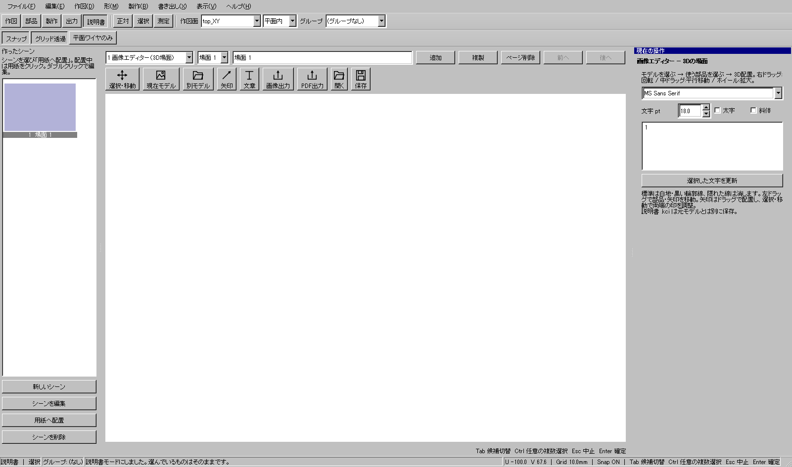
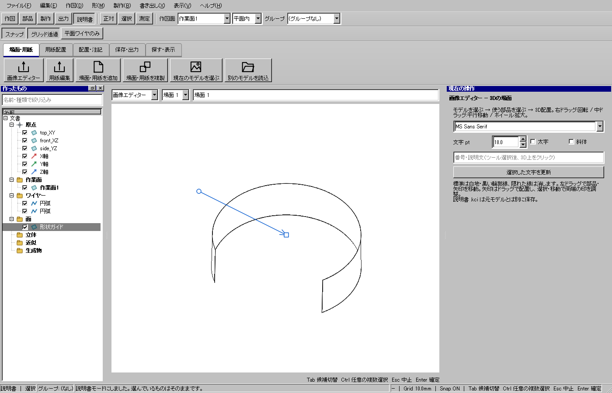

組立順序を太字で書く
使う機能：番号・文章
場面または用紙へ編集可能な文章を置きます。文字の大きさ・フォント・太字を設定して、図形と重ならない位置へ置きます。
説明書上に編集可能な文字が置かれる。
1 準備 — 元の図形から作る
場面または用紙を開く。
まだ用意できていなければ、次の手順を先に行ってください。既にモデルがある場合も、例の座標・大きさ・面の向きを自分のモデルへ読み替えます。
- 3D場面から画像入りの組立説明書を作る — 図形の作成から順に練習できます。
練習前にKCD2を別名保存します。数値の長さはmm、角度は度です。平面内のu/vと世界XYZを区別します。
2 使う道具を開く — 押す場所
- 説明書 → 番号・文章
別の入口：Ctrl+K → 番号・文章を検索 → 候補の用途を確認して開きます。別モードなら「全モードから探す」をオンにします。

3 操作手順 — 一つずつ進める
1 番号・文字を選ぶ
この段階で確認：この操作で使う入力：場面または用紙を開く
2 文字を入力する
この段階で確認：使う対象・値：例:屋根を差し込む、14pt、太字
3 位置とフォント、大きさ、太さを指定する
この段階で確認：説明書上に編集可能な文字が置かれる。
4 設定する欄と数値
ボタン名・欄名と、今回使う値を対応させてください。項目が出ていない場合は作り方・モードが合っているか確認し、ペイン内をスクロールします。
| 見る欄・役割 | この例の設定と意味 |
|---|---|
| 例文 | 屋根を差し込む |
| 大きさ | 14pt |
| 太さ | 太字 |
選択の確認：役割欄の名前と3Dの強調を照合します。重なって拾いにくい時はTabで候補を替えます。全体を使う例では左一覧の要素名を選び、3Dの1辺選択と区別します。

この実画面は既存操作試験の一場面で、下の数値例の完成画像とは限りません。設定・選択の操作画面。具体的な完成例は段階写真のある作業例を参照してください。
5 確定して結果を確認
最後の点や配置位置を指定した時点で、この1回の操作が完了します。数値欄を入力するEnterと、形を完成させる操作を画面下の案内で区別します。
説明書上に編集可能な文字が置かれる。
形を作る操作では、元と結果の名前を分けて一覧で確認し、必要に応じて元を一時非表示にします。表示だけの機能では形状や要素数を変えることが目的ではありません。
6 取消・やり直し・保存
入力をやめる時はEscを使います。作図で直前の点を戻す場合は、画面の案内に従ってBackspaceを使います。確定後の図面変更はCtrl+Zです。
モデルの編集正本はKCD2、説明書の編集正本はKCIです。外部へ出力するだけの機能では、出力ファイルと編集元を両方残してください。
進めない場合 — 症状から戻る場所を探す
| 起きていること | 確認して直す場所 |
|---|---|
| 文字が読みにくい | 背景とのコントラストと用紙実寸で確認 |
| 形状注記にしたい | 説明書の文字とCAD寸法注記は別 |
この機能の入力条件：文書がありません。
計算中は処理表示を見ます。失敗が出たら、対象・入力条件を変えずに何度も押すのでなく、案内にある対象と条件を確認します。
参考画面の出典と確認範囲
試験名：HP-INSTRUCTIONS 3D model choice outlines arrows image export。試験全体の結果：passed。画像はコマンド呼出し直後で、入力待ち・下見の場合もあります。各段階の完成証拠ではありません。